|
 |
 |
 |
|
|
|
|
|
There are two matrix stacks that transform and project geometric primitives
to the screen. One matrix stack is called the EZ_MODELVIEW. The
top matrix on this stack is used to transform the current primitive to the eye
coordinate space. The other stack is called EZ_PROJECTION. The
top matrix on this stack is used to project the transformed geometric
primitives to the normalized screen space.
To set the current matrix mode, use
void EZ_MatrixMode(int mode);
Modes are: EZ_MODELVIEW or EZ_PROJECTION.
 The EZ graphics library uses row vectors. If the
top matrix on the
The EZ graphics library uses row vectors. If the
top matrix on the EZ_MODELVIEW stack is and the top
matrix on the EZ_PROJECTION stack is , then for any given
vector , the transformed coordinate in the eye
coordinate space is 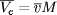; and the
projected coordinate in the homogeneous screen space (unclipped) is
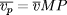. This coordinate is then clipped and
scaled to the current viewport.
There are a few more commands for manipulating matrices.
void EZ_LoadIdentity(void)
This function resets the top matrix of the currment matrix stack to Identity.
void EZ_LoadMatrix(EZ_Matrix M)
This function replace the top matrix of the current matrix stack by
matrix M.
void EZ_MultMatrix(EZ_Matrix M)
This function left multiply the top matrix of the current matrix stack by matrix . If the current top matrix is , this function replaces with .
void EZ_GetMatrix(EZ_Matrix M)
This function copies the top matrix of the current matrix stack to the given matrix .
void EZ_PushMatrix(void)
This function pushes down the current matrix stack, duplicating the top matrix.
void EZ_PopMatrix(void)
This function pops the current matrix stack.
The following routines are normally used to modify the projection matrices.
void EZ_Ortho(float l, float r, float b, float t, float n, float f);
This function defines a box-shaped encloure in the eye coordinate
system. l, r,b,t,n,f specifies the boundries of the box,
they are the clipping planes. This function multiply the current
matrix by
void EZ_Ortho2(float left, float right, float bottom, float top)
This routine sets up a 2D clipping rectangle. It is equivalent to
EZ_Ortho with parameter n = -1.0, f= 1.0.
void EZ_Perspective(float fov, float, asp, float n, float f)
This routine defines a perspective viewing pyramid inside the eye coordinate system. The vertical direction is the direction in the eye coordinate system. This function multiply the current matrix by
void EZ_Frustum(float l, float r, float b, float t, float n, float f);
This routine defines a perspective viewing pyramid inside the eye coordinate system. The eye is at the origin. The lower-left and upper-right corners of the near clipping window are 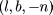 and 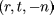. The parameter specifies the distance from the eye to the far clipping plane. This function multiply the current matrix by
The following command is normally used to define the eye coordinate system.
void EZ_LookAt(float vx, float vy, float vz, float px, float py, float pz, float ux, float uy, float uz);
This routine defines a view point and a reference point on the line of sight, together with a view up vector which defines the direction of the y-axis of the eye coordinate system. This function multiply the current matrix by
Trans(-vx,-vy,-vz)M where is a matrix described below.
Let 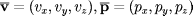, 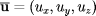 and define
Then
Equivalently, let 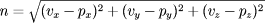, 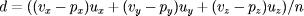, 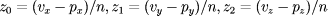, 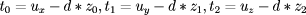, 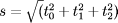 and . Then
The next few routines are general purpose commands for manipulating matrices.
void EZ_Translate(float x, float y, float z);
This command multiply the current matrix by
void EZ_Scale(float x, float y, float z);
This command multiply the current matrix by
void EZ_Rotate(float angle, float x, float y, float z);
This command multiply the current matrix by
where is the matrix
where 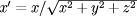, 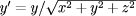 and 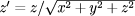.
void EZ_GenerateRotationMatrix(EZ_Matrix M, float angle, float x, float y, float z);
This command generate the rotation matrix Rot(angle, x,y,z) and copy the result to the given matrix .
In this example, we draw a face using spheres. We use matrices to scale and translate the (same) sphere to different locations.
/********************* Example G3 **********************************************/
#include "EZ.h"
static void event_handle(EZ_Widget *, void *,int,XEvent *); /* event handle */
static void draw(EZ_Widget *canvas); /* repaint func */
static float light_position[] = {0.5, 0.5, 0.0, 1.0}; /* light position */
static float white[] = {1.0,1.0,1.0,1.0};
static float shininess[] = {8.0};
main(int argc, char **argv)
{
EZ_Widget *frame, *canvas;
EZ_Initialize(argc, argv, 1);
frame = EZ_CreateWidget(EZ_WIDGET_FRAME, NULL,
EZ_FILL_MODE, EZ_FILL_BOTH,
0);
canvas = EZ_CreateWidget(EZ_WIDGET_3D_CANVAS, frame,
EZ_WIDTH_HINT, 320,
EZ_HEIGHT_HINT, 320,
EZ_EVENT_HANDLER, event_handle, NULL,
0);
EZ_DisplayWidget(canvas);
/* setup GL modes */
EZ_AutoSelectBackBuffer(); /* select a back buffer */
EZ_RGBMode(); /* select color mode */
EZ_ShadeModel(EZ_SMOOTH); /* select shading model */
EZ_DrawBuffer(EZ_BACK); /* draw into the backbuf*/
EZ_Enable(EZ_CULL_FACE); /* enable backface cull */
EZ_Enable(EZ_DEPTH_TEST); /* enable zbuffer */
EZ_Enable(EZ_LIGHTING); /* enable lighting */
EZ_Enable(EZ_LIGHT0); /* enable one light src */
EZ_Lightfv(EZ_LIGHT0, EZ_POSITION, light_position);
EZ_Materialfv(EZ_FRONT,EZ_SPECULAR,white); /* set material for front face */
EZ_Materialfv(EZ_FRONT,EZ_SHININESS,shininess);
EZ_MatrixMode(EZ_PROJECTION); /* setup a fixed projection matrix */
EZ_LoadIdentity();
EZ_Perspective(45.0, 1.0, 2.0, 30.0); /* a perspective view, ... */
EZ_MatrixMode(EZ_MODELVIEW); /* set matrix mode to model view */
EZ_LoadIdentity();
EZ_LookAt(0.3,0.1,15.0, 0.0,0.0,0.0, /* and set up a look at view */
0.0,1.0, 0.0); /* view up vector */
EZ_EventMainLoop(); /* turn control to EZWGL */
}
static float rotX = 0.0, rotY = 0.0, rotZ = 0.0; /* rotation angles */
static float yellow[] = {0.8, 0.8, 0.0, 0.0}; /* material color */
static float red[] = {0.8, 0.4, 0.3, 0.0}; /* material color */
static void draw(EZ_Widget *canvas)
{
EZ_Clear(EZ_COLOR_BUFFER_BIT | EZ_DEPTH_BUFFER_BIT);
EZ_PushMatrix();
EZ_Rotate(rotX, 1.0, 0.0, 0.0 );
EZ_Rotate(rotY, 0.0, 1.0, 0.0 );
EZ_Rotate(rotZ, 0.0, 0.0, 1.0 );
/* draw a red sphere */
EZ_Materialfv(EZ_FRONT,EZ_DIFFUSE, red);
EZ_Sphere(EZ_SPHERE_TRIANGLE, 4, 0.0,0.0,0.0,3.0);
/* translate to (-1.0, 0.8, 0.8), scale down unformly by 0.2
* and draw a yellow sphere. */
EZ_PushMatrix();
EZ_Materialfv(EZ_FRONT,EZ_DIFFUSE, yellow);
EZ_Translate(-1.0,0.8,2.2);
EZ_Scale(0.2,0.2,0.2);
EZ_Sphere(EZ_SPHERE_TRIANGLE, 4, 0.0,0.0,0.0,3.0);
EZ_PopMatrix();
/* translate to (1.0, 0.8, 0.8), scale down unformly by 0.2
* and draw a yellow sphere */
EZ_PushMatrix();
EZ_Materialfv(EZ_FRONT,EZ_DIFFUSE, yellow);
EZ_Translate(1.0,0.8,2.2);
EZ_Scale(0.2,0.2,0.2);
EZ_Sphere(EZ_SPHERE_TRIANGLE, 4, 0.0,0.0,0.0,3.0);
EZ_PopMatrix();
/* and so on */
EZ_PushMatrix();
EZ_Materialfv(EZ_FRONT,EZ_DIFFUSE, yellow);
EZ_Translate(0.0,-0.1,2.65);
EZ_Scale(0.15,0.35,0.15);
EZ_Sphere(EZ_SPHERE_TRIANGLE, 4, 0.0,0.0,0.0,3.0);
EZ_PopMatrix();
EZ_PushMatrix();
EZ_Materialfv(EZ_FRONT,EZ_DIFFUSE, yellow);
EZ_Translate(0.0,-1.6,2.6);
EZ_Scale(0.4,0.1,0.1);
EZ_Sphere(EZ_SPHERE_TRIANGLE, 4, 0.0,0.0,0.0,3.0);
EZ_PopMatrix();
EZ_PopMatrix();
EZ_SwapBuffers(); /* copy backbuf to front */
}
static void event_handle(EZ_Widget *canvas, void *data, int eventType, XEvent *xev)
{
switch(eventType) {
case EZ_REDRAW:
case EZ_RESIZE:
draw(canvas);
break;
case EZ_KEY_PRESS:
switch(EZ_PressedKey) {
case EZ_DOWN_KEY: rotX += 5.0; draw(canvas); break;
case EZ_UP_KEY: rotX -= 5.0; draw(canvas); break;
case EZ_RIGHT_KEY: rotY += 5.0; draw(canvas); break;
case EZ_LEFT_KEY: rotY -= 5.0; draw(canvas); break;
case EZ_ESCAPE_KEY: EZ_Shutdown(); exit(0); break;
default: break;
}
EZ_GLResetEvents(NULL); /* clear the event queue, too many keypresses */
break;
default:
break;
}
}
/********************* Example G3 **********************************************/
|
|
|
|
|
HTML Documentation Maintainance:Arturo Espinosa
<arturo@nuclecu.unam.mx>